2 Guns (2013)
Genre: Action, Komödie, Krimi

2012 – Das Ende der Welt (2009)
Genre: Action, Sci-Fi

22 Bullets - Die Rache des Profis (2010)
Genre: Action, Krimi, Drama
24 Hours to Live (2017)
Genre: Action, Science-Fiction, Thriller

30 Minuten oder weniger (2011)
Genre: Action, Komödie, Krimi

50 erste Dates (2004)
Genre: Komödie, Drama, Liebesfilm

65 (2023)
Genre: Action, Abenteuer, Science-Fiction

A Score to Settle (2019)
Genre: Action, Thriller
Ace Ventura – Ein tierischer Detektiv (1994)
Genre: Komödie
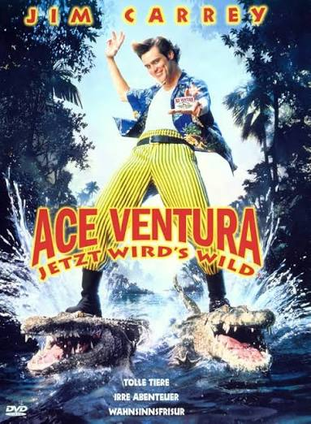
Ace Ventura – Jetzt wird’s wild (1995)
Genre: Abenteuer, Komödie, Krimi

After.Life (2009)
Genre: Drama, Mystery, Thriller

All Is Lost (2013)
Genre: Action, Abenteuer, Drama

American Hustle (2013)
Genre: Krimi, Drama

American Outlaws (2001)
Genre: Action, Drama, Western

Anon - Mit den Augen des Killers (2018)
Genre: Krimi, Mystery, Science-Fiction

Apocalypse Now (1979)
Genre: Drama, Mystery, Kriegsfilm
Approaching the Unknown (2016)
Genre: Drama, Science-Fiction, Thriller
Arlington Road (1999)
Genre: Action, Krimi, Drama

Banana Joe (1982)
Genre: Action, Komödie

Banditen (2001)
Genre: Action, Komödie, Krimi
Basic Instinct (1992)
Genre: Drama, Mystery, Liebesfilm

Big Fish (2003)
Genre: Abenteuer, Drama, Fantasy

Bill und Teds verrückte Reise durch die Zeit (1989)
Genre: Abenteuer, Komödie, Musikfilm

Black 47 (2018)
Genre: Action, Drama, Geschichte

Black Hawk Down (2001)
Genre: Krieg, Action
Blaze of Glory – Flammender Ruhm (1990)
Genre: Western, Action

Bleeding Steel (2017)
Genre: Action, Science-Fiction, Thriller
Blitz Cop - Killer vs. Killer Cop (2011)
Genre: Action, Abenteuer, Krimi

Brick Mansions (2014)
Genre: Action, Krimi, Thriller

Bullet Train (2022)
Genre: Action, Komödie, Thriller
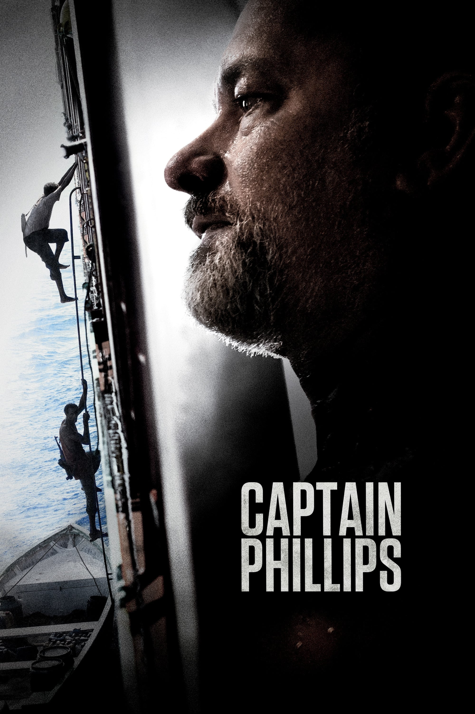
Captain Phillips (2013)
Genre: Action, Biografie, Krimi
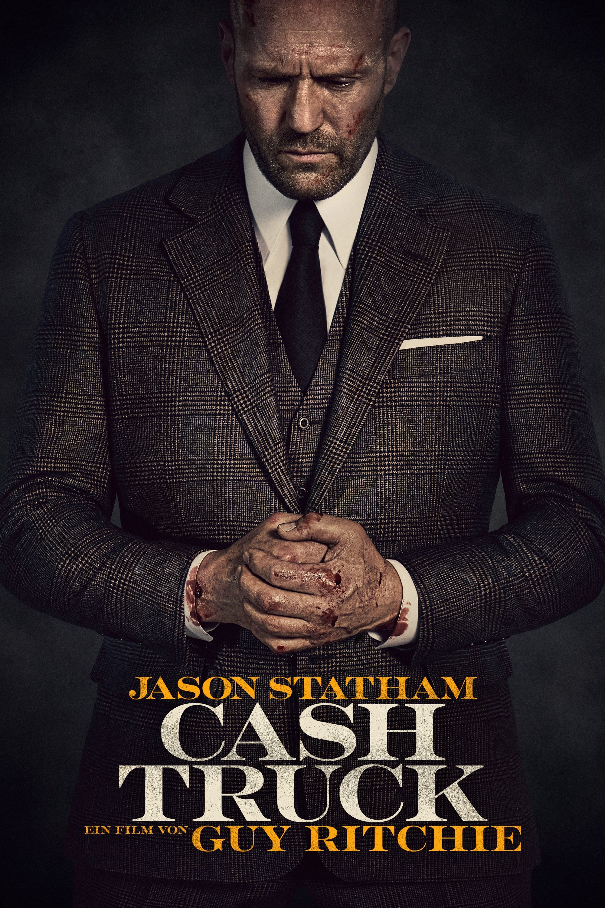
Cash Truck (2021)
Genre: Action, Krimi, Thriller

Casino (1995)
Genre: Krimi, Drama

Centurion (2010)
Genre: Action, Drama, Geschichte

Chaos (2005)
Genre: Action, Krimi, Drama

Clean - Rache ist ein schmutziges Geschäft (2021)
Genre: Action, Krimi, Drama

Code 8 (2019)
Genre: Action, Krimi, Drama

Dame, König, As, Spion (2011)
Genre: Drama, Mystery, Thriller

Danger Park - Tödliche Safari (2021)
Genre: Action, Thriller

Dark Encounter (2019)
Genre: Mystery, Science-Fiction, Thriller

Das Duell (2016)
Genre: Drama, Western

Das fünfte Element (1997)
Genre: Action, Abenteuer, Science-Fiction

Das geheime Fenster (2004)
Genre: Drama, Mystery, Thriller
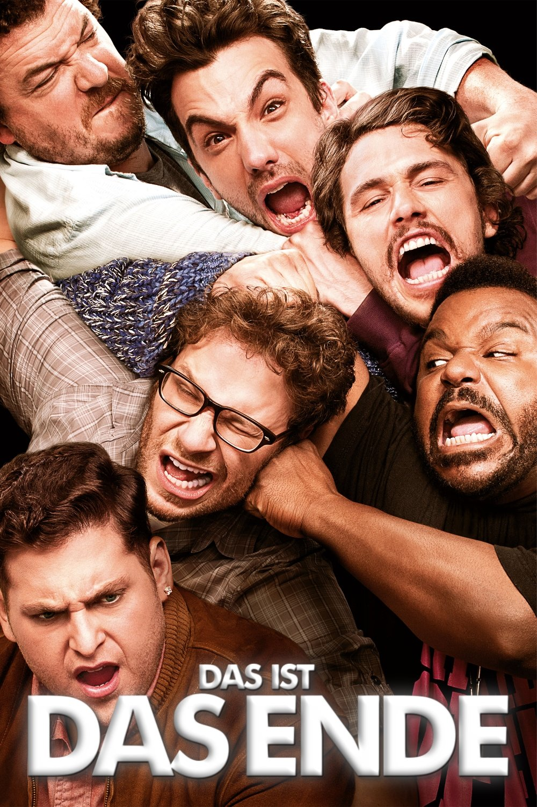
Das ist das Ende (2013)
Genre: Komödie, Fantasy, Science-Fiction

Das Jerico Projekt (2016)
Genre: Action, Science-Fiction, Thriller

Das letzte Einhorn (1982)
Genre: Kinderfilm, Fantasy

Das Netz (1995)
Genre: Action, Krimi, Drama

Das Spiel der Macht (2006)
Genre: Drama, Thriller

Das Wunder in der 8. Straße (1987)
Genre: Komödie, Familienfilm, Fantasy
Dead for a Dollar (2022)
Genre: Western, Thriller

Der fantastische Mr. Fox (2009)
Genre: Animation, Abenteuer, Komödie

Der hundertjaehrige der aus dem Fenster stieg (2013)
Genre: Abenteuer, Komödie

Der letzte Mohikaner (1992)
Genre: Krieg, Action

Der Marsianer - Rettet Mark Watney (2015)
Genre: Abenteuer, Drama, Science-Fiction

Der Medicus (2013)
Genre: Abenteuer, Drama, Geschichte

Der mit dem Wolf tanzt (1990)
Genre: Abenteuer, Drama, Western

Der Pate (1972)
Genre: Krimi, Drama

Der Pate II (1974)
Genre: Action, Krimi, Drama

Der Patriot (2000)
Genre: Action, Drama, Kriegsfilm

Der Untergang (2004)
Genre: Biografie, Drama, Geschichte

Desperado (1995)
Genre: Action, Krimi, Drama

Dick und Jane (2005)
Genre: Komödie, Krimi

Die Brücke (1959)
Genre: Drama, Geschichte, Kriegsfilm

Die Brücke am Kwai (1957)
Genre: Abenteuer, Drama, Kriegsfilm

Die fabelhafte Welt der Amélie (2001)
Genre: Komödie, Liebesfilm

Die Herrschaft des Feuers (2002)
Genre: Action, Abenteuer, Fantasy
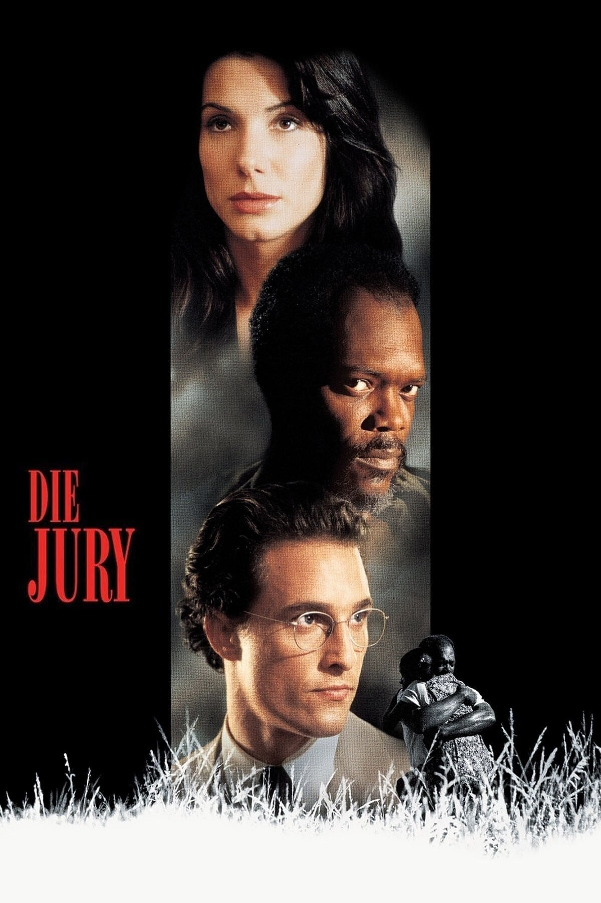
Die Jury (1996)
Genre: Krimi, Drama, Thriller

Die Katze aus dem Weltraum (1978)
Genre: Komödie, Familienfilm, Science-Fiction

Die Katze aus dem Weltraum X (1978)
Genre: Komödie, Familienfilm, Science-Fiction

Die Kunst zu gewinnen - Moneyball (2011)
Genre: Biografie, Drama, Sportfilm

Die Körperfresser kommen (1978)
Genre: Horror, Science-Fiction

Die Maske des Zorro (1998)
Genre: Action, Abenteuer, Komödie

Die Outsider (1983)
Genre: Krimi, Drama

Die Schlümpfe (2011)
Genre: Animation, Abenteuer, Komödie

Die Truman Show (1998)
Genre: Komödie, Drama

Die versunkene Stadt Z (2016)
Genre: Abenteuer, Biografie, Drama
Die zehn Gebote (1956)
Genre: Abenteuer, Drama, Familienfilm

Die üblichen Verdächtigen (1995)
Genre: Krimi, Drama, Mystery

Dinner for One - Farbe (1999)
Genre: Kurzfilm, Komödie
Dinner for One - Original (1963)
Genre: Kurzfilm, Komödie
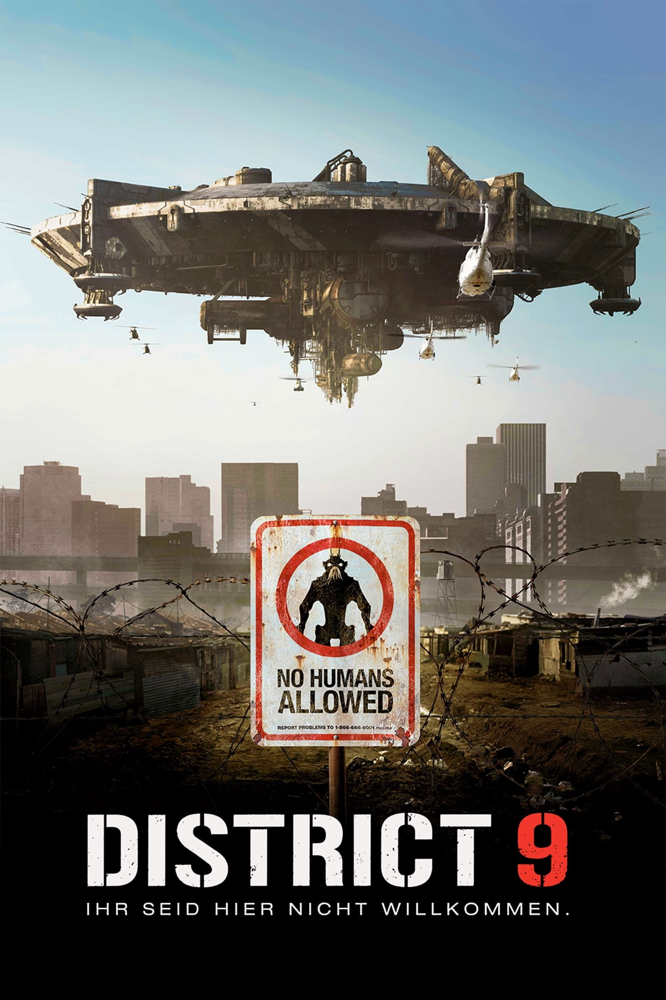
District 9 (2009)
Genre: Action, Science-Fiction, Thriller

Doghouse (2009)
Genre: Komödie, Horror, Science-Fiction
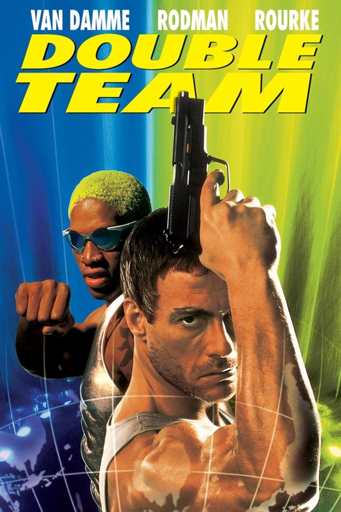
Double Team (1997)
Genre: Action, Komödie, Science-Fiction

Edge of Tomorrow (2014)
Genre: Action, Sci-Fi

Ein Gauner & Gentleman (2018)
Genre: Biografie, Komödie, Krimi
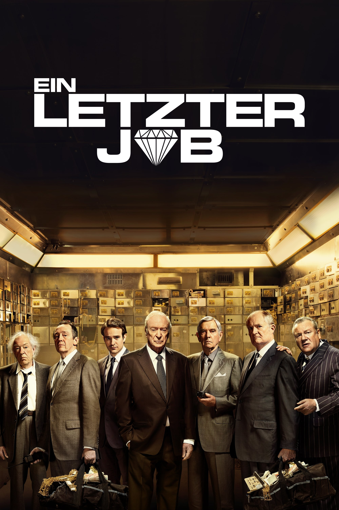
Ein letzter Job (2018)
Genre: Biografie, Krimi, Drama
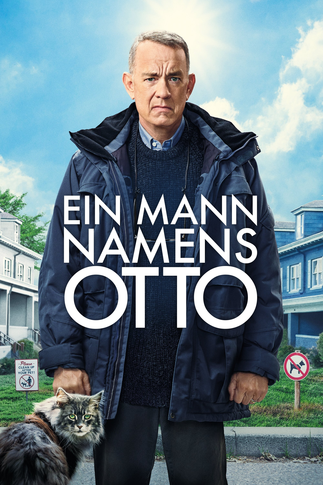
Ein Mann namens Otto (2022)
Genre: Komödie, Drama

Ein Mann namens Ove (2015)
Genre: Komödie, Drama, Liebesfilm
Ein unmoralisches Angebot (1993)
Genre: Drama, Liebesfilm
Eine Frage der Ehre (1992)
Genre: Drama, Thriller

El Mariachi (1992)
Genre: Action, Krimi, Thriller
Feinde Hostiles (2017)
Genre: Drama, Western

Female Agents – Geheimkommando Phoenix (2008)
Genre: Drama, Kriegsfilm

Fight Club (1999)
Genre: Krimi, Drama, Thriller

Final Fantasy I - Die Mächte in dir (2001)
Genre: Animation, Action, Abenteuer
Final Fantasy XII - Advent Children (2005)
Genre: Action, Abenteuer, Fantasy

Flight (2012)
Genre: Drama, Thriller

Flodder Forever (1995)
Genre: Komödie
Flodder – Eine Familie zum Knutschen (1986)
Genre: Action, Komödie

Gattaca (1997)
Genre: Drama, Science-Fiction, Thriller

Gesetz der Rache (2009)
Genre: Action, Krimi, Drama

Gesetz der Straße (2009)
Genre: Krimi, Drama, Thriller
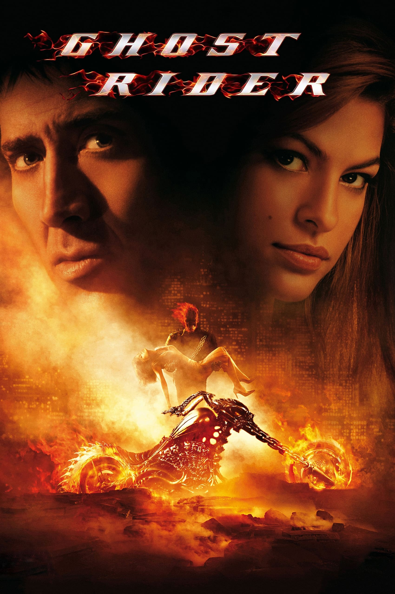
Ghost Rider (2007)
Genre: Action, Fantasy, Thriller

Ghostbusters -1- (1984)
Genre: Action, Komödie, Fantasy
Ghostbusters -2- (1989)
Genre: Action, Komödie, Fantasy
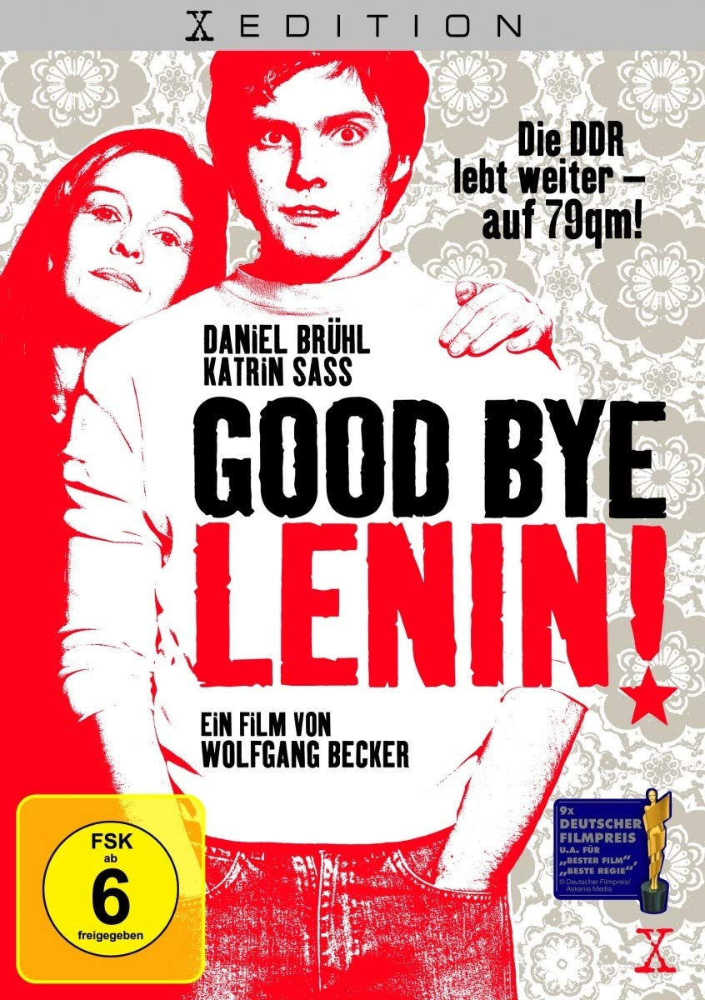
Good Bye, Lenin (2003)
Genre: Komödie, Drama
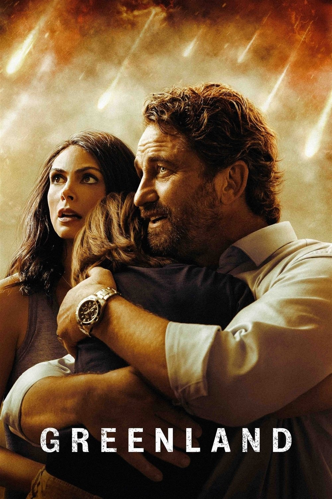
Greenland (2020)
Genre: Action, Thriller

Haben sie das von den Morgans gehört (2009)
Genre: Komödie, Drama, Liebesfilm
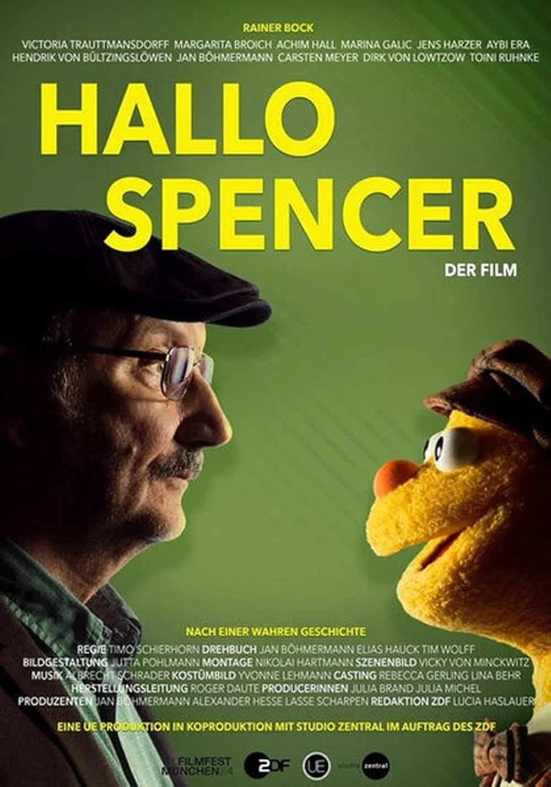
Hallo Spencer (2024)
Genre: Komödie, Familienfilm

Hard Powder (2019)
Genre: Action, Komödie, Krimi

Heat (1995)
Genre: Action, Krimi, Drama
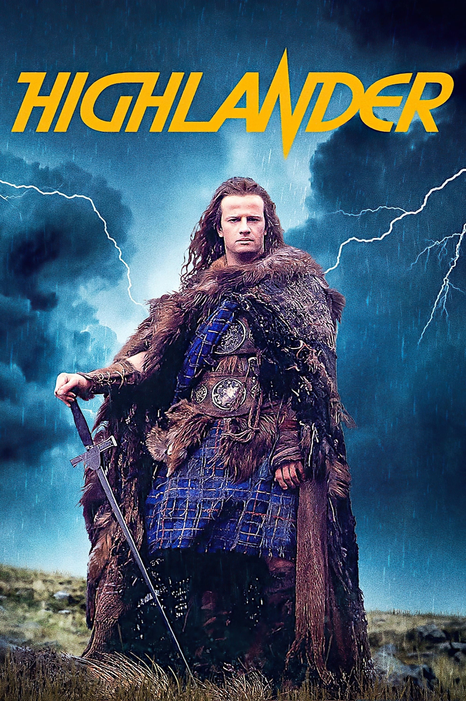
Highlander (1986)
Genre: Action, Abenteuer, Fantasy
Hollow Man – Unsichtbare Gefahr (2000)
Genre: Action, Horror, Science-Fiction
Hook (1991)
Genre: Abenteuer, Komödie, Familienfilm

Hours - Wettlauf gegen die Zeit (2013)
Genre: Drama, Thriller

Hunter Killer (2018)
Genre: Action, Thriller

I Am Mother (2019)
Genre: Thriller, Sci-Fi

I Spy (2002)
Genre: Action, Abenteuer, Komödie

I, Frankenstein (2014)
Genre: Action, Fantasy, Science-Fiction

Ich glaub’ mich knutscht ein Elch (1981)
Genre: Komödie, Kriegsfilm
Ich. Darf. Nicht. Schlafen. (2014)
Genre: Drama, Mystery, Thriller

Identität (2003)
Genre: Mystery, Thriller
Im Auge des Hurrikans (2017)
Genre: Action, Abenteuer, Krimi

Im Auge des Hurrikans - The Hurricane Heist (2018)
Genre: Action, Abenteuer, Krimi

Immer Ärger mit Grandpa (2020)
Genre: Komödie, Drama, Familienfilm

In the Line of Fire – Die zweite Chance (1993)
Genre: Thriller, Action

Independence Day (1996)
Genre: Action, Abenteuer, Science-Fiction

Insomnia - Todesschlaf (1997)
Genre: Krimi, Mystery, Thriller

Interstellar (2014)
Genre: Abenteuer, Drama, Science-Fiction

Irgendwann in Mexico (2003)
Genre: Western, Action
Iron Mask (2019)
Genre: Action, Abenteuer, Fantasy

Iron Sky (2012)
Genre: Action, Abenteuer, Komödie
Iron Sky - The Coming Race (2019)
Genre: Action, Abenteuer, Komödie

Jagd auf einen Unsichtbaren (1992)
Genre: Komödie, Liebesfilm, Science-Fiction
Jagdfieber I (2006)
Genre: Animation, Abenteuer, Komödie

Jagdfieber II (2008)
Genre: Animation, Abenteuer, Komödie

Jagdfieber III (2010)
Genre: Animation, Abenteuer, Komödie

Jeepers Creepers 2 (2003)
Genre: Horror, Mystery

Joyride – Spritztour (2001)
Genre: Drama, Mystery, Thriller
Jungle (2017)
Genre: Abenteuer, Biografie, Drama

Karate Kid I (1984)
Genre: Action, Drama, Familienfilm
Karate Kid II - Entscheidung in Okinawa (1986)
Genre: Action, Kinderfilm

Karate Kid III - Die letzte Entscheidung (1989)
Genre: Action, Kinderfilm
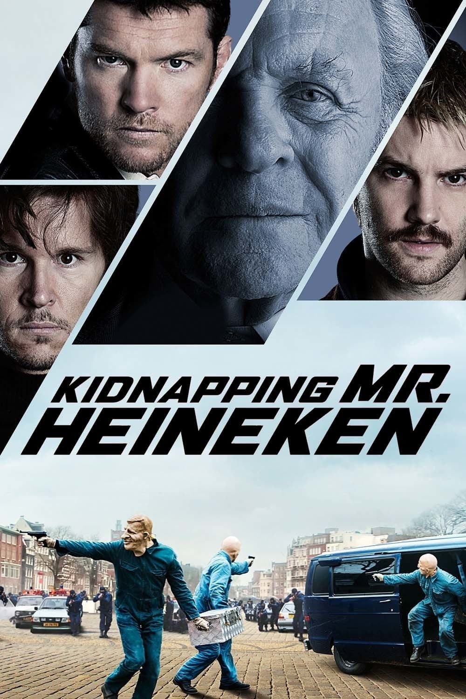
Kidnapping Freddy Heineken (2015)
Genre: Action, Krimi, Drama

Kill Bill – Volume 1 (2003)
Genre: Action, Krimi, Thriller

Kill Bill – Volume 2 (2004)
Genre: Action, Krimi, Thriller
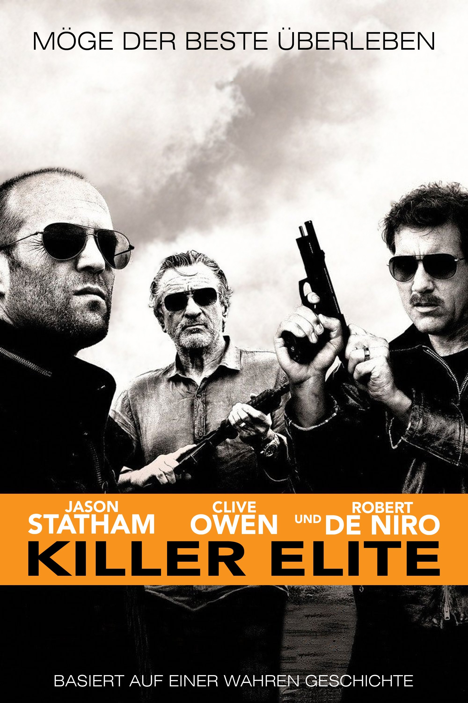
Killer Elite (2011)
Genre: Action, Krimi, Thriller

Kindsköpfe (2010)
Genre: Komödie
Knives Out -Mord ist Familiensache (2019)
Genre: Komödie, Krimi, Drama

Konferenz der Tiere (2010)
Genre: Animation, Abenteuer, Komödie
Kung Fu Hustle (2004)
Genre: Action, Komödie

Lake Placid (1999)
Genre: Action, Komödie, Horror

Last Action Hero (1993)
Genre: Action, Komödie

Last Knights - Die Ritter des 7. Ordens (2015)
Genre: Action, Drama

Legenden der Leidenschaft (1994)
Genre: Drama, Liebesfilm, Kriegsfilm

Leon der Profi (1994)
Genre: Action, Krimi, Drama

Lola rennt (1998)
Genre: Action, Krimi, Thriller
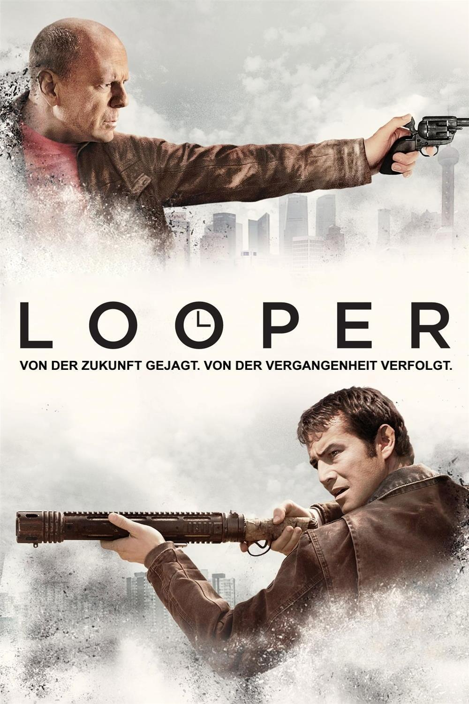
Looper (2012)
Genre: Action, Drama, Science-Fiction
Lucky Number Slevin (2006)
Genre: Thriller, Komödie

M3GAN (2022)
Genre: Horror, Science-Fiction, Thriller

M3GAN 2.0 (2025)
Genre: Action, Science-Fiction, Thriller

Machine Gun Preacher (2011)
Genre: Action, Thriller

Mann unter Feuer (2004)
Genre: Action, Krimi, Drama

Marlowe (2022)
Genre: Krimi, Drama, Mystery
Marmaduke (2010)
Genre: Komödie, Familienfilm
Meine Stiefmutter ist ein Alien (1988)
Genre: Komödie, Science-Fiction
Memory - Sein letzter Auftrag (2022)
Genre: Action, Krimi, Thriller

Men in Black III (2012)
Genre: Action, Sci-Fi
Michael Clayton (2007)
Genre: Krimi, Drama, Mystery
Mickey 17 (2025)
Genre: Abenteuer, Komödie, Fantasy
Midnight in Paris (2011)
Genre: Komödie, Romanze
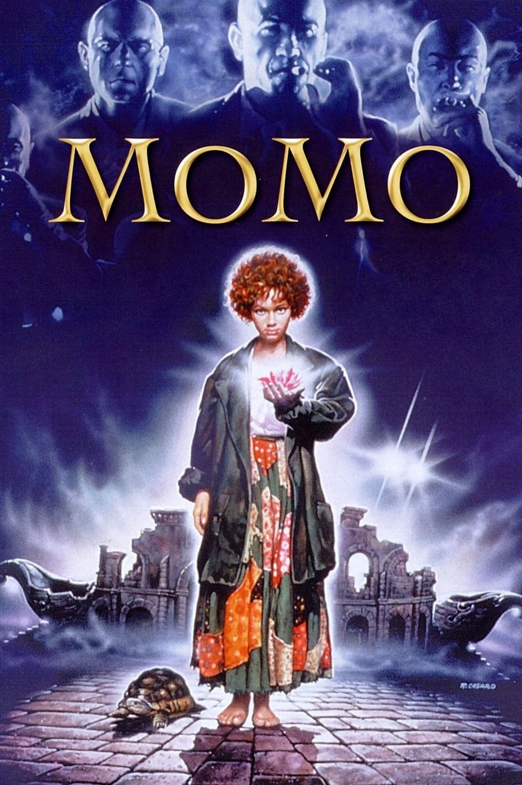
Momo (1986)
Genre: Komödie, Familienfilm, Fantasy

Money Train (1995)
Genre: Action, Komödie, Krimi

Monsieur Claude -2- (2019)
Genre: Komödie

Morbius (2022)
Genre: Action, Abenteuer, Horror
Mortal – Mut ist unsterblich (2020)
Genre: Action, Abenteuer, Drama
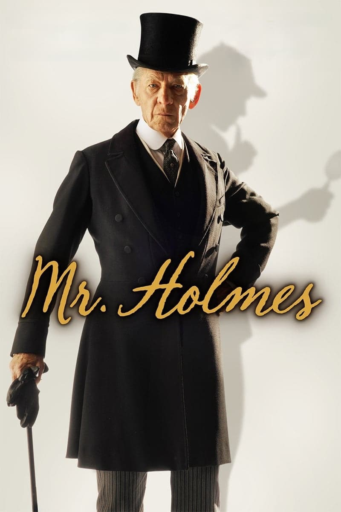
Mr. Holmes (2015)
Genre: Krimi, Drama, Familienfilm
Mrs. Doubtfire (1993)
Genre: Komödie, Drama, Familienfilm

Nackt unter Wölfen (2015)
Genre: Drama, Geschichte, Kriegsfilm

Narc (2002)
Genre: Krimi, Drama, Mystery
Nicht schuldig (1996)
Genre: Krimi, Drama, Thriller
No Escape (2015)
Genre: Action, Thriller

No Way Out – Es gibt kein Zurück (1987)
Genre: Thriller, Action

Nur noch 60 Sekunden (2000)
Genre: Action, Krimi, Thriller

Ohne Limit (2011)
Genre: Thriller, Sci-Fi

Open Range – Weites Land (2003)
Genre: Action, Drama, Liebesfilm

Pakt der Wölfe (2001)
Genre: Action, Abenteuer, Drama
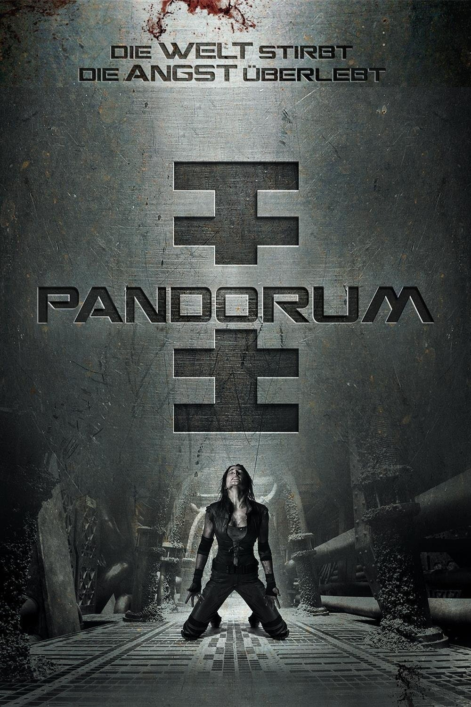
Pandorum (2009)
Genre: Action, Horror, Mystery

Papillon (1973)
Genre: Biografie, Krimi, Drama

Pay Day (2018)
Genre: Action, Komödie

Peter Pan (2003)
Genre: Abenteuer, Familienfilm, Fantasy

Picknick mit Bären (2015)
Genre: Abenteuer, Biografie, Komödie

Plane (2023)
Genre: Action, Abenteuer, Thriller
Platoon (1986)
Genre: Drama, Kriegsfilm

Precious Cargo (2016)
Genre: Action, Komödie, Thriller

Puls (2016)
Genre: Action, Abenteuer, Horror
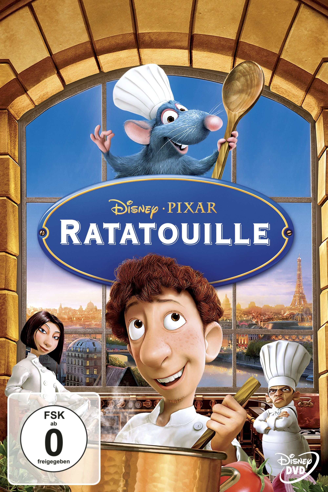
Ratatouille (2007)
Genre: Animation, Abenteuer, Komödie

Red Dawn (2012)
Genre: Action, Kriegsfilm
Replicas (2018)
Genre: Action, Drama, Science-Fiction

Retribution - Vergeltung (2023)
Genre: Action, Thriller

Ritter Jamal – Eine schwarze Komödie (2001)
Genre: Abenteuer, Komödie, Fantasy

Runner Runner (2013)
Genre: Krimi, Mystery, Thriller
Running Scared (2006)
Genre: Action, Krimi, Drama

Rush – Alles für den Sieg (2013)
Genre: Biografie, Drama, Sportfilm

Räuber Hotzenplotz (2006)
Genre: Komödie, Krimi, Familienfilm
S.W.A.T. – Die Spezialeinheit (2003)
Genre: Action, Abenteuer, Krimi

Salt (2010)
Genre: Action, Thriller
Schiffsmeldungen (2001)
Genre: Drama

Schlaflos in Seattle (1993)
Genre: Komödie, Drama, Liebesfilm

Selfless – Der Fremde in mir (2015)
Genre: Action, Mystery, Science-Fiction

Seraphim falls - Gnadenlose Jagd (2006)
Genre: Action, Drama, Thriller
Shooter (2007)
Genre: Action, Drama, Thriller

Sieben Jahren in Tibet (1997)
Genre: Abenteuer, Biografie, Drama
Sleepy Hollow (1999)
Genre: Fantasy, Horror, Mystery

Snow White and the Huntsman (2012)
Genre: Action, Abenteuer, Drama

Spaceballs (1987)
Genre: Abenteuer, Komödie, Science-Fiction

Spiel mir das Lied vom Tod (1968)
Genre: Drama, Western

Stand by Me – Das Geheimnis eines Sommers (1986)
Genre: Abenteuer, Komödie, Drama

Sterben will gelernt sein (2010)
Genre: Komödie, Drama

Stiefbrüder (2008)
Genre: Komödie

Stolz und Vorurteil (2005)
Genre: Drama, Liebesfilm

Street Fighter – Die entscheidende Schlacht (1994)
Genre: Action, Abenteuer, Komödie

Street Kings (2008)
Genre: Action, Krimi, Thriller

Superbad (2007)
Genre: Komödie

Tage des Donners (1990)
Genre: Action, Drama, Sportfilm

The 6th Day (2000)
Genre: Action, Sci-Fi
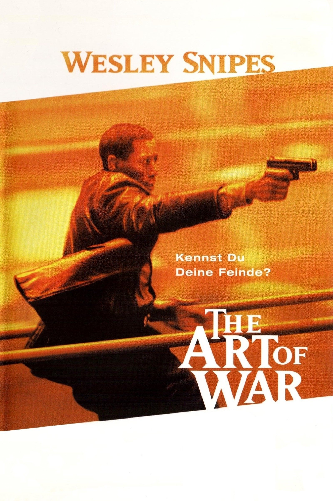
The Art of War (2000)
Genre: Action, Abenteuer, Krimi
The Best Man (2023)
Genre: Action, Thriller

The Cold Light of Day (2012)
Genre: Action, Abenteuer, Thriller
The Commuter - Die Fremde im Zug (2018)
Genre: Action, Mystery, Thriller

The Contract (2006)
Genre: Action, Krimi, Drama

The Crow – Die Krähe (1994)
Genre: Action, Krimi, Drama

The Expendables (2010)
Genre: Action, Abenteuer, Thriller
The Fog – Nebel des Grauens (2005)
Genre: Horror, Mystery

The Fountain (2006)
Genre: Drama, Mystery, Liebesfilm
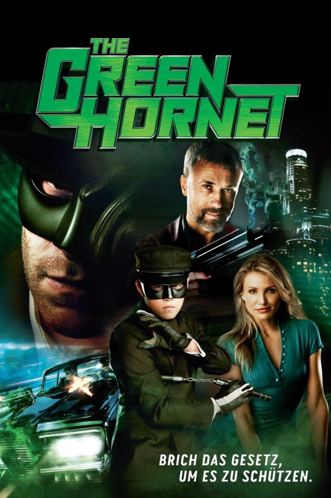
The Green Hornet (2011)
Genre: Action, Komödie

The Huntsman and the Ice Queen (2016)
Genre: Action, Abenteuer, Drama

The Imitation Game – Ein streng geheimes Leben (2014)
Genre: Thriller, Krieg

The International (2009)
Genre: Action, Krimi, Drama

The Knight of Shadows (2019)
Genre: Action, Abenteuer, Familienfilm
The Lost King (2022)
Genre: Komödie, Drama
The Machine - They Rise. We Fall (2013)
Genre: Action, Drama, Science-Fiction

The Man From Earth (2017)
Genre: Drama, Fantasy, Science-Fiction
The Man from Toronto (2022)
Genre: Action, Abenteuer, Komödie

The Misfits - Die Meisterdiebe (2021)
Genre: Abenteuer, Komödie, Thriller

The Old Way (2023)
Genre: Western, Action

The Osiris Child (2016)
Genre: Action, Abenteuer, Drama
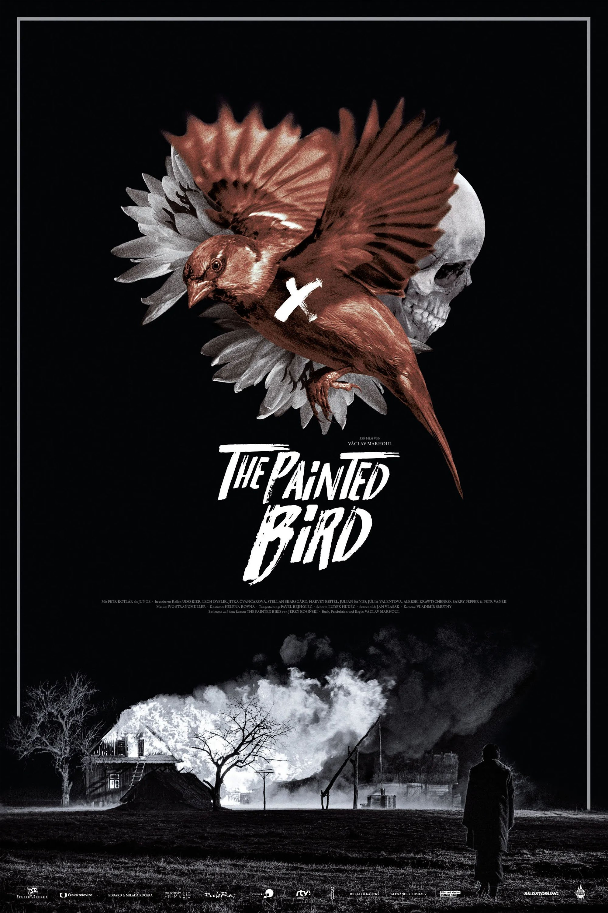
The Painted Bird (2019)
Genre: Drama, Horror, Thriller

The Revenant – Der Rückkehrer (2015)
Genre: Abenteuer, Drama, Western

The Road (2009)
Genre: Drama, Thriller
The Ship - Das Böse lauert unter der Oberfläche (2019)
Genre: Horror, Mystery

The Signal (2014)
Genre: Drama, Mystery, Science-Fiction

The Straight Story - Eine wahre Geschichte (1999)
Genre: Drama, Roadmovie
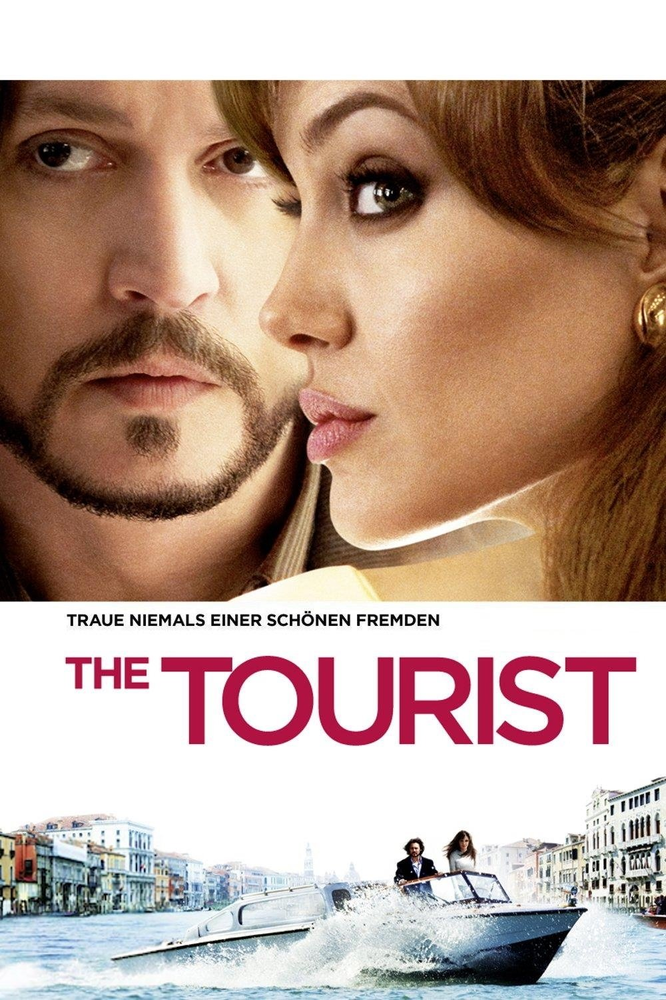
The Tourist (2010)
Genre: Action, Thriller

The Untouchables – Die Unbestechlichen (1987)
Genre: Krimi, Drama, Thriller
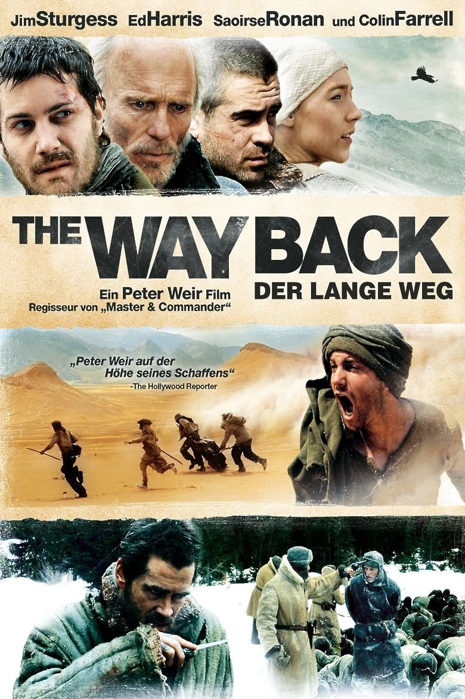
The Way Back - Der lange Weg (2010)
Genre: Abenteuer, Drama, Geschichte
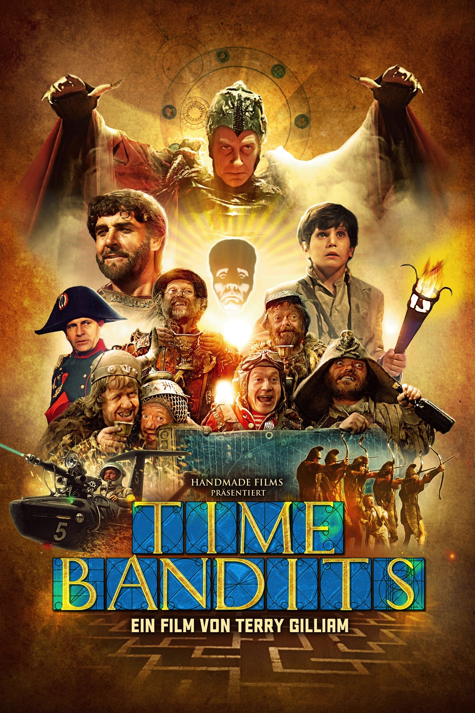
Time Bandits (1981)
Genre: Abenteuer, Komödie, Fantasy

Time Trap - Die Höhle – Das Tor in eine andere Zeit (2017)
Genre: Action, Abenteuer, Mystery

Todeszug nach Yuma (2007)
Genre: Action, Krimi, Drama

Toni Erdmann (2016)
Genre: Komödie, Drama